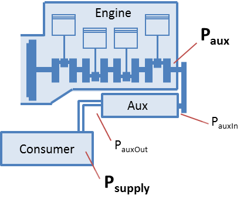

In VECTO a generic map-based approach
was implemented to consider all types of auxiliaries. The supply power
demand for each single auxiliary is defined in the driving cycle. Hence
a time/distance-dependent power demand can be defined. Based on the
supply power and a pre-defined efficiency map the auxiliary input power
is calculated. A constant efficiency determines the losses between
auxiliary and engine.
For each auxiliary the power demand is calculated using the following steps:

- Auxiliary speed: naux = nEng * TransRatio
- Auxiliary output power: PauxOut = Psupply / EffToSply
- Auxiliary input power: PauxIn = EffMap(nAux, PAuxOut)
- Auxiliary power consumption: Paux = PauxIn / EffToEng
- Paux is added to the engine's power demand
Each auxiliary must be defined in the
Job File and each
driving cycle used with this vehicle must include supply power for each auxiliary.
To link the supply power in the driving cycle to the correct auxiliary
in the Job File an ID is used. The corresponding supply power is then
named
"<Aux_ID>".
Example: The Auxiliary with the ID "ALT" (in the Job File) is linked to
the supply power in the column "<AUX_ALT>" in the driving cylce.